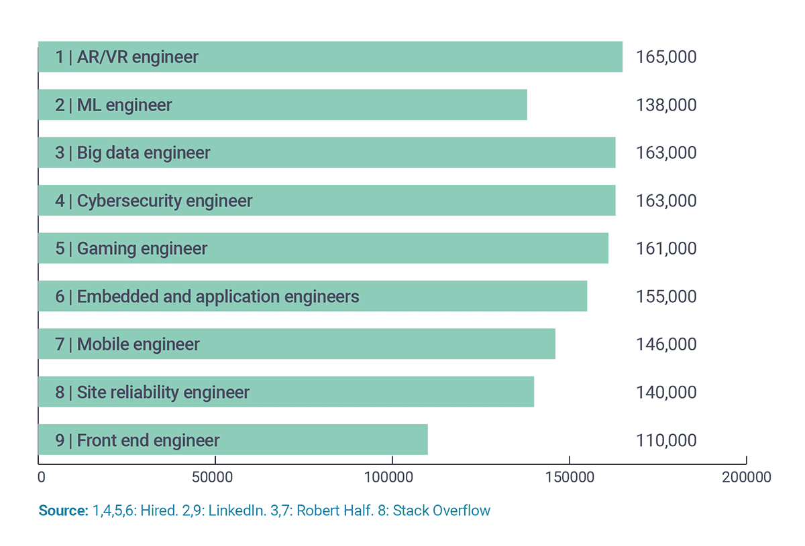

| Safeway | Dollar Store |
|---|---|
| Carter worked at safeway the end of his junior year to october of his senior year. He started out as Sanitation Crew, which help clean carts and the store since COVID-19 was still a big worry. However as COVID-19 died down, Carter was moved into the Online Shopper Crew. He would shop for customers and deliver the goods to their car. He would frequently find ways to take extended breaks and was well-liked. | During the summer between Carter's freshman and sophmore year of college he landed at his local dollar tree. Here Carter was viewed as a model employee for just doing his job. The bar was low and by doing what he was asked he was the favorite employee in the eyes of the managers. He left this job when his sophmore year began and never went back as he said "The pay was not worth the work I had to do". |
Embarrasing Photo. You have been warned. -->
Carter currently works as a babysitter for a company called BusyBees. He has worked with both churches and families of many kinds. Some kinds of situations he has had to deal with are:
However Carter continues to do this job as he says "It pays well and the schedule is flexible so why not".
As of right now, Carter is unsure of which field of software development to go into.
He looks to be interested in whoever will pay the most. Another idea that Carter may get
into is working on cheap, reusable mobile games. They appear to be relatively easy to program
and remake into new games, and allows for ad revenue plus in-app purchases.
